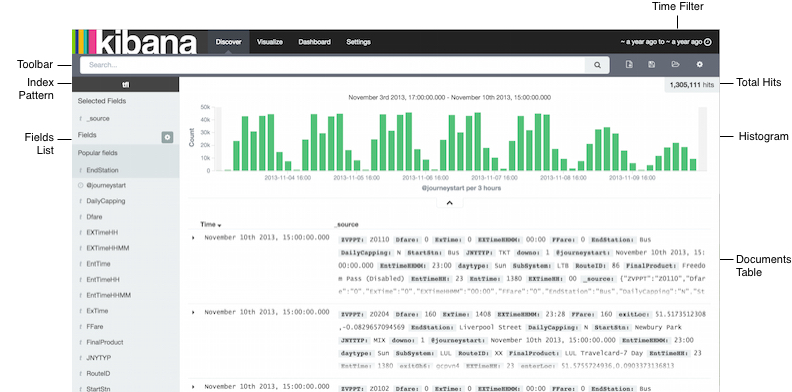
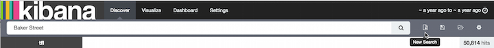
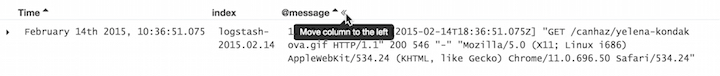
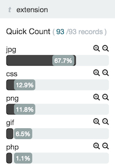

Discoveredit
You can interactively explore your data from the Discover page. You have access to every document in every index that matches the selected index pattern. You can submit search queries, filter the search results, and view document data. You can also see the number of documents that match the search query and get field value statistics. If a time field is configured for the selected index pattern, the distribution of documents over time is displayed in a histogram at the top of the page.

Setting the Time Filteredit
The Time Filter restricts the search results to a specific time period. You can set a time filter if your index contains time-based events and a time-field is configured for the selected index pattern.
By default the time filter is set to the last 15 minutes. You can use the Time Picker to change the time filter or select a specific time interval or time range in the histogram at the top of the page.
To set a time filter with the Time Picker:
- Click the Time Filter displayed in the upper right corner of the menu bar to open the Time Picker.
- To set a quick filter, simply click one of the shortcut links.
- To specify a relative Time Filter, click Relative and enter the relative start time. You can specify the relative start time as any number of seconds, minutes, hours, days, months, or years ago.
- To specify an absolute Time Filter, click Absolute and enter the start date in the From field and the end date in the To field.
- Click the caret at the bottom of the Time Picker to hide it.
To set a Time Filter from the histogram, do one of the following:
- Click the bar that represents the time interval you want to zoom in on.
- Click and drag to view a specific timespan. You must start the selection with the cursor over the background of the chart—the cursor changes to a plus sign when you hover over a valid start point.
You can use the browser Back button to undo your changes.
Searching Your Dataedit
You can search the indices that match the current index pattern by submitting a search from the Discover page. You can enter simple query strings, use the Lucene query syntax, or use the full JSON-based Elasticsearch Query DSL.
When you submit a search, the histogram, Documents table, and Fields list are updated to reflect the search results. The total number of hits (matching documents) is shown in the upper right corner of the histogram. The Documents table shows the first five hundred hits. By default, the hits are listed in reverse chronological order, with the newest documents shown first. You can reverse the sort order by by clicking on the Time column header. You can also sort the table using the values in any indexed field. For more information, see Sorting the Documents Table.
To search your data:
Enter a query string in the Search field:
-
To perform a free text search, simply enter a text string. For example, if you’re searching web server logs, you could enter
safarito search all fields for the termsafari. -
To search for a value in a specific field, you prefix the value with the name of the field. For example, you could enter
status:200to limit the results to entries that contain the value200in thestatusfield. -
To search for a range of values, you can use the bracketed range syntax,
[START_VALUE TO END_VALUE]. For example, to find entries that have 4xx status codes, you could enterstatus:[400 TO 499]. To specify more complex search criteria, you can use the Boolean operators
AND,OR, andNOT. For example, to find entries that have 4xx status codes and have an extension ofphporhtml, you could enterstatus:[400 TO 499] AND (extension:php OR extension:html).
These examples use the Lucene query syntax. You can also submit queries using the Elasticsearch Query DSL. For examples, see query string syntax in the Elasticsearch Reference.
-
To perform a free text search, simply enter a text string. For example, if you’re searching web server logs, you could enter
- Press Enter or click the Search button to submit your search query.
Starting a New Searchedit
To clear the current search and start a new search, click the New Search button in the Discover toolbar.

Saving a Searchedit
You can reload saved searches on the Discover page and use them as the basis of visualizations. Saving a search saves both the search query string and the currently selected index pattern.
To save the current search:
- Click the Save Search button in the Discover toolbar.
- Enter a name for the search and click Save.
Loading a Saved Searchedit
To load a saved search:
- Click the Load Search button in the Discover toolbar.
- Select the search you want to load.
If the saved search is associated with a different index pattern than is currently selected, loading the saved search also changes the selected index pattern.
Changing Which Indices You’re Searchingedit
When you submit a search request, the indices that match the currently-selected index pattern are searched. The current index pattern is shown below the search field. To change which indices you are searching, select a different index pattern.
To select a different index pattern:
- Click the Settings button in the Discover toolbar.
- Select the pattern you want to use from the Index Pattern list.
For more information about index patterns, see Creating an Index Pattern.
Automatically Refreshing the Pageedit
You can configure a refresh interval to automatically refresh the Discover page with the latest index data. This periodically resubmits the search query.
When a refresh interval is set, it is displayed to the left of the Time Filter in the menu bar.
To set the refresh interval:
- Click the Time Filter in the upper right corner of the menu bar.
- Click the Refresh Interval tab.
- Choose a refresh interval from the list.
Filtering by Fieldedit
You can filter the search results to display only those documents that contain a particular value in a field. You can also create negative filters that exclude documents that contain the specified field value.
You can add filters from the Fields list or from the Documents table. When you add a filter, it is displayed in the filter bar below the search query. From the filter bar, you can enable or disable a filter, invert the filter (change it from a positive filter to a negative filter and vice-versa), toggle the filter on or off, or remove it entirely.
To add a filter from the Fields list:
- Click the name of the field you want to filter on. This displays the top five values for that field. To the right of each value, there are two magnifying glass buttons—one for adding a regular (positive) filter, and one for adding a negative filter.
-
To add a positive filter, click the Positive Filter button
 . This filters out documents that don’t contain that value in the field.
. This filters out documents that don’t contain that value in the field.
-
To add a negative filter, click the Negative Filter button
 . This excludes documents that contain that value in the field.
. This excludes documents that contain that value in the field.
To add a filter from the Documents table:
- Expand a document in the Documents table by clicking the Expand button to the left of the document’s entry in the first column (the first column is usually Time). To the right of each field name, there are two magnifying glass buttons—one for adding a regular (positive) filter, and one for adding a negative filter.
-
To add a positive filter based on the document’s value in a field, click the Positive Filter button . This filters out documents that don’t contain the specified value in that field.
-
To add a negative filter based on the document’s value in a field, click the Negative Filter button . This excludes documents that contain the specified value in that field.
Viewing Document Dataedit
When you submit a search query, the 500 most recent documents that match the query are listed in the Documents table. You can configure the number of documents shown in the table by setting the discover:sampleSize property in Advanced Settings. By default, the table shows the localized version of the time field specified in the selected index pattern and the document _source. You can add fields to the Documents table from the Fields list. You can sort the listed documents by any indexed field that’s included in the table.
To view a document’s field data:
- Click the Expand button to the left of the document’s entry in the first column (the first column is usually Time). Kibana reads the document data from Elasticsearch and displays the document fields in a table. The table contains a row for each field that contains the name of the field, add filter buttons, and the field value.
- To view the original JSON document (pretty-printed), click the JSON tab.
- To view the document data as a separate page, click the link. You can bookmark and share this link to provide direct access to a particular document.
- To collapse the document details, click the Collapse button .
Sorting the Document Listedit
You can sort the documents in the Documents table by the values in any indexed field. If a time field is configured for the selected index pattern, by default the documents are sorted in reverse chronological order.
To change the sort order:
- Click the name of the field you want to sort by. The fields you can use for sorting have a sort button to the right of the field name. Clicking the field name a second time reverses the sort order.
Adding Field Columns to the Documents Tableedit
By default, the Documents table shows the localized version of the time field specified in the selected index pattern and the document _source. You can add fields to the table from the Fields list.
To add field columns to the Documents table:
- Mouse over a field in the Fields list and click its add button .
- Repeat until you’ve added all the fields you want to display in the Documents table.
The added field columns replace the _source column in the Documents table. The added fields are also
listed in the Selected Fields section at the top of the field list.
To rearrange the field columns in the table, mouse over the header of the column you want to move and click the Move button.

Removing Field Columns from the Documents Tableedit
To remove field columns from the Documents table:
- Mouse over the field you want to remove in the Selected Fields section of the Fields list and click its remove button .
- Repeat until you’ve removed all the fields you want to drop from the Documents table.
Viewing Field Data Statisticsedit
From the field list, you can see how many documents in the Documents table contain a particular field, what the top 5 values are, and what percentage of documents contain each value.
To view field data statistics:
- Click the name of a field in the Fields list. The field can be anywhere in the Fields list—Selected Fields, Popular Fields, or the list of other fields.

To create a visualization based on the field, click the Visualize button below the field statistics.